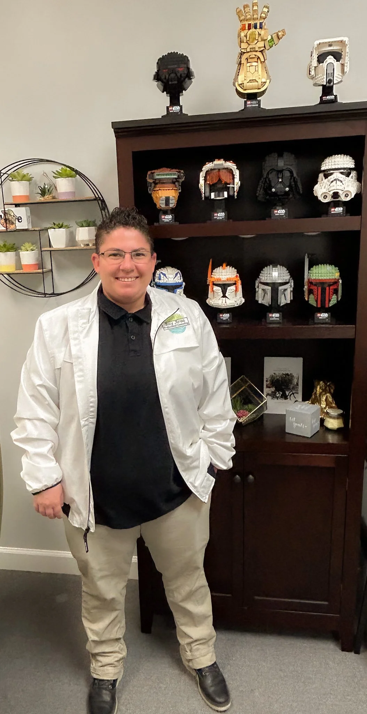
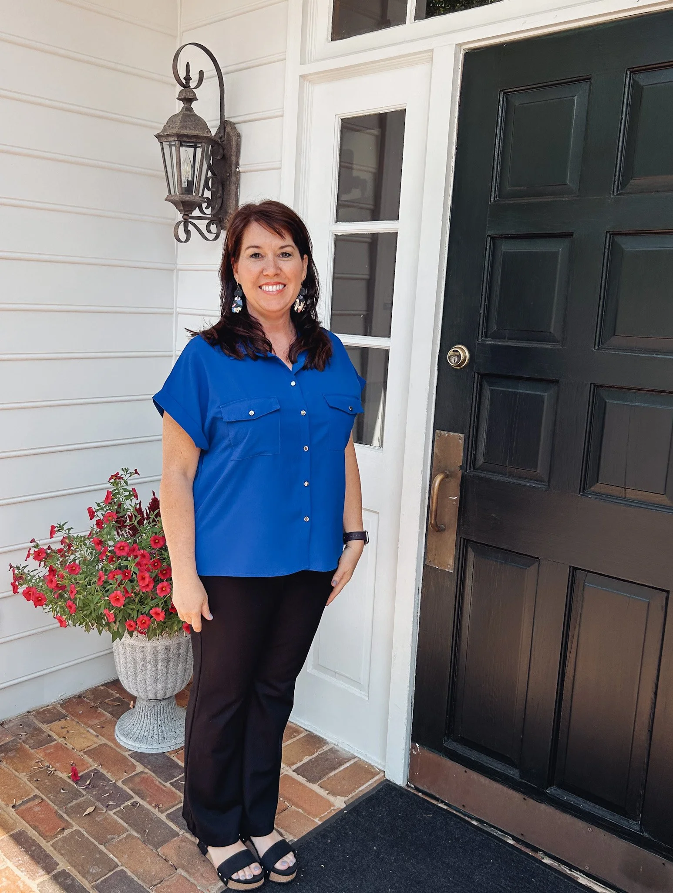
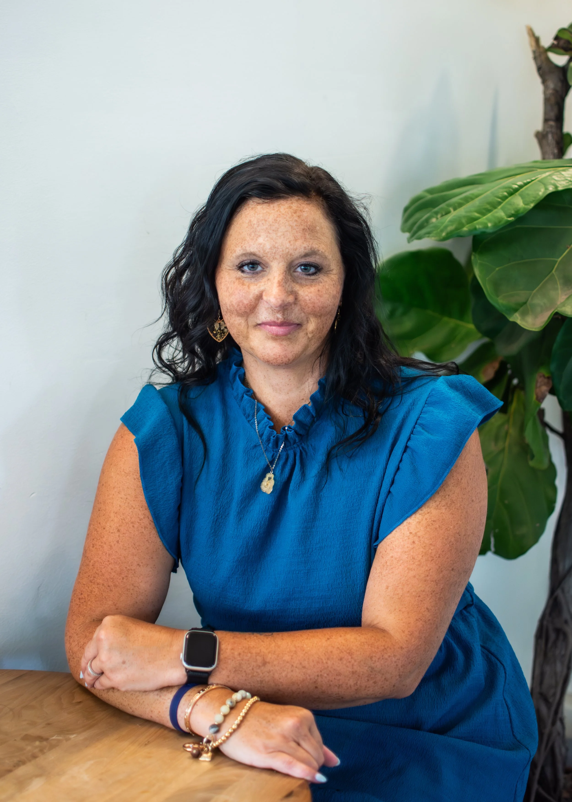

Explore by area of support.
Select a featured area to see therapists whose biographies mention that population or concern.
Showing all 10 therapists.

Alexa Da Rosa
Works with anxiety, depression, PTSD, relationships, family concerns, transitions, LGBTQ+ concerns, and addiction.
View Profile
Lacey Moore
Specializes in anxiety, depression, adjustment and life transitions, addiction, trauma, anger, self-esteem, ADHD, and family relations.
View Profile
Cindy Perronne
Provides counseling for adults, couples, and adolescents with more than 20 years of professional experience.
View ProfileVirginia Inge Gordon
Supports clients experiencing depression, anxiety, relationships and parenting concerns, grief, self-esteem concerns, and trauma.
View Profile
Lanya Daffin
Offers client-centered support for substance use, anxiety, depression, self-esteem, anger management, and life concerns.
View ProfileKayla Whatley
Works with children, adolescents, college-aged clients, and families facing depression, trauma, anxiety, ADHD, and more.
View ProfileLeigh Mohorn
Provides support for perinatal mental health, infertility, pregnancy loss, anxiety, depression, grief, and trauma.
View ProfileDeena Alloul
Creates an inclusive space for clients experiencing ADHD, anxiety, or uncertainty about next steps in life.
View Profile
Tifani Nobles
Supports individuals and families navigating anxiety, stress, grief, family restructuring, and meaningful life change.
View ProfileMadison Ford
Supports adults and children, including clients on the autism spectrum, through anxiety, depression, trauma, grief, and life challenges.
View Profile